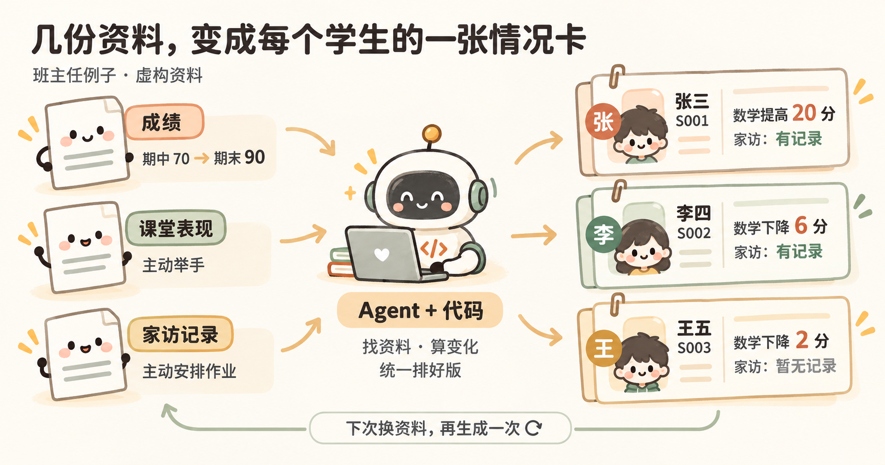

【产品运营部】AI 使用知识分享
让 Agent 借助代码完成任务，把每次都要重复的步骤留下来，下次继续使用。
整理资料、做报告、准备 PPT，很多事情换了一批资料，就要再做一遍。
可以让 AI 把其中反复要做的步骤写成程序。程序有点像一份电脑能照着执行的“菜谱”：做法定下来，换一批资料，还能按同样的步骤处理。这次做出结果，下次换资料，还能继续用。
这里把 Claude Code、Codex 这类能读文件、写代码、运行程序的 AI 助手叫作 Agent。可以把它当成一个能动手的搭档：你说清要做什么，它帮忙实现，做完一起看结果。最终是否合适，由你判断。

一、先看一个例子
假设你是一位班主任，要给全班 45 个学生准备家长会材料。成绩、课堂表现、家访记录散在几份文件里，每个人都要找资料、算成绩变化、整理内容、排版。
可以让 Agent 写一个程序，把同一个学生的资料放到一起，生成每人一页的情况卡。下次资料更新，再用它生成。
这次用 3 个虚构学生演示。先看看做出来是什么样，再试着让 Agent 做一份。

打开学生情况卡演示 · 已内置样例，打开就能看。
怎样开始
用已经安装并登录的 Codex 或 Claude Code，在电脑上新建一个空文件夹，让它在这个文件夹里工作。把这个文件夹当成一张工作台：要用的资料、做出的程序和使用说明，都放在这里。下次继续做，就回到这张工作台。
先把自己的需要说清楚，比如：
我要准备家长会材料。把成绩、课堂表现和家访记录按学生整理到一起，每个学生一页，方便打印。下次资料更新，我还想继续用。做好后告诉我怎么打开和使用。
不用先决定文件格式、用哪种代码，先说清手头有什么、想得到什么。练手的完整需求和虚构资料已经放在下面，复制给 Agent 就能开始。
做完后，按照 Agent 的说明打开结果。看看分数有没有算对、资料有没有放错人、打印有没有截断。打不开就把现象或截图发给它，让它继续检查。
二、改一点，再用一次
第一版能用后，挑一个自己在意的地方改，比如：
加一个搜索框，输入姓名或学号，就能找到对应学生。
改完就试一下。就像请同事改一份报告，“再改好一点”不太好下手，“李四的卡片里放进了张三的家访记录”就清楚多了。告诉 Agent 具体哪里不对、希望怎样，再让它修改。
下次资料更新，先用原来的程序再做一次。有新的需要，再继续加。让 Agent 把用法记进项目里的说明，下次不用翻聊天记录找步骤。
这样留下来的，不只有一份结果，还有程序、资料和用法。 反复做的步骤交给程序，人继续定要求、看结果。
想知道代码怎样查找、判断和写入？看图理解代码的几个能力，看看程序怎样按要求列出待沟通名单。
三、换成自己的事情
手头的材料也可以是一批文章、会议记录或 PDF。先让 Agent 阅读、整理出你需要的结果；要批量整理文件、统计数据、生成文档或 PPT 时，它可以借助代码完成其中的步骤。
做过几次后，如果总要重新找资料、解释哪份是最新的，就开始把反复使用的资料整理好，更新时继续补充。像给常用资料准备几个贴好标签的抽屉：知道放在哪里、哪份是最新的，下次就不用把所有东西重新翻一遍。
资料怎样整理、什么时候用多维表？整理和关联输入资料
不用等全部弄懂。挑一件自己确实要做、又会反复做的事，先做出一个能看到的结果，再带着使用中的问题继续尝试。
需要时，再打开这些参考
- 想找现成项目试用：去 GitHub 找项目、下载和保存版本。Git 和 GitHub Desktop 的安装方法也在里面。
- 给 Agent 接上“手脚”：钉钉 MCP 使用案例，看看它怎样连接日常工具，在授权范围内读取资料、执行操作。